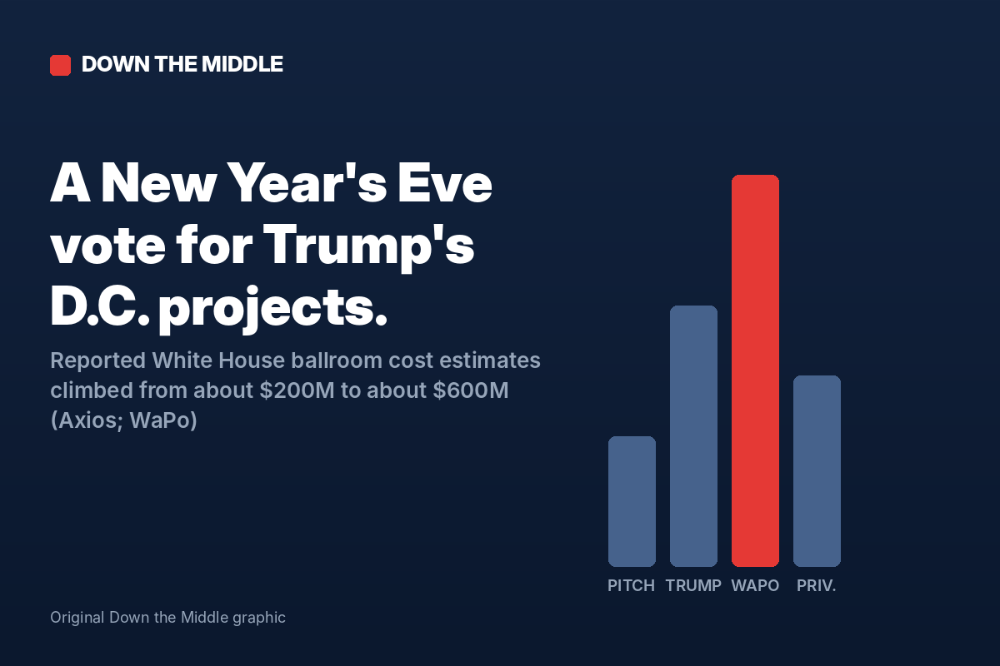
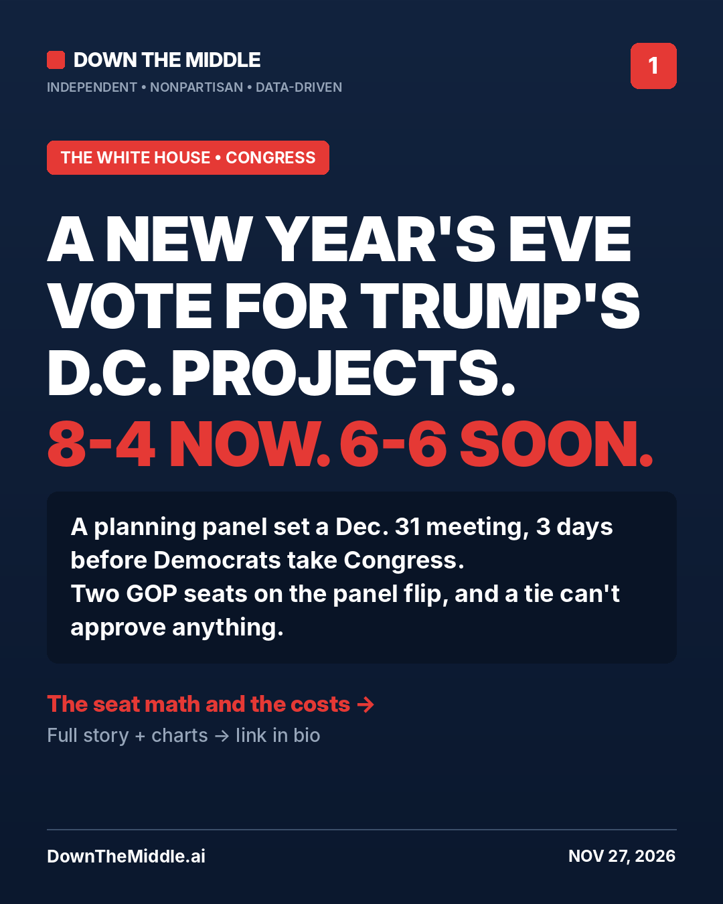
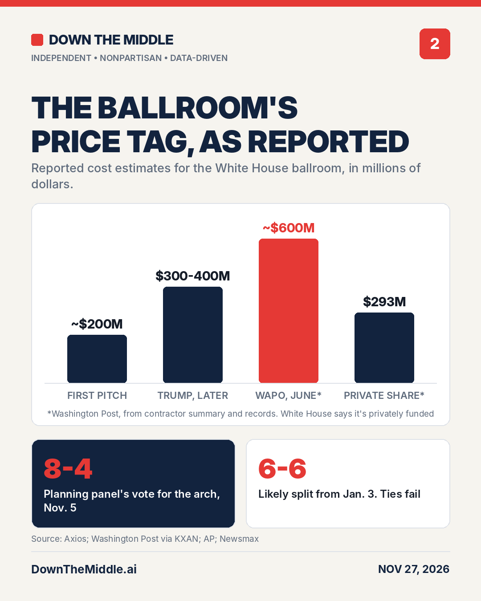

A New Year’s Eve Vote for Trump’s D.C. Projects: The Planning Panel Goes From 8–4 to 6–6 in January
November 27, 2026 · Independent, nonpartisan analysis

The federal panel that signs off on construction in the nation’s capital has called a special meeting for New Year’s Eve, Dec. 31, three days before Democrats take control of Congress, according to Newsmax and The Washington Post. [1] [2] The chairman of the National Capital Planning Commission (NCPC), White House official Mark Paoletta, notified members on Friday; a tentative agenda is to follow. [1] Items expected for final approval include a rebuilt public golf course in East Potomac Park, a redevelopment around the Tidal Basin, and painting the Eisenhower Executive Office Building white. [1]
The timing matters because of who sits on the panel. Two of its 12 seats belong to the chairs of two congressional committees, now Republicans Sen. Rand Paul and Rep. James Comer. [6] [10] In January those seats pass to Democrats, and with D.C.’s four members they could force 6–6 ties, which are not enough to approve a project. [1] [6] As of Friday, the commission’s website listed only its regular Dec. 3 meeting. [9]
By the numbers
Figures from news reports, the NCPC and polling. Partisan and advocacy figures are labeled.
What happened
The NCPC is a 12-member federal body: three presidential appointees, the heads of three executive agencies (Defense, Interior and the General Services Administration), D.C.’s mayor and council chair plus two mayoral appointees, and the leaders of two congressional committees. [10] It normally meets on the first Thursday of each month. [9] Its next regular meeting, on Dec. 3, is scheduled to vote on comments on the golf and Tidal Basin concepts; any final votes on Dec. 31 await a published agenda. [1]
The commission has already approved the biggest project. On Nov. 5, after a remote hearing that ran 9½ hours with more than 120 witnesses, it voted 8–4 to give final approval to a 250-foot triumphal arch near Arlington Memorial Bridge. [3] [7] U.S. District Judge Tanya Chutkan blocked groundbreaking that night and later extended the order through Dec. 3. [3] [4] Separately, U.S. District Judge Ana Reyes ordered East Potomac’s golf course kept open, finding the government had likely violated the National Environmental Policy Act “in its haste to meet an arbitrary deadline.” [4] NPR reported her order was set to expire Nov. 28, with plaintiffs seeking an extension to Dec. 12; Newsmax reports the park’s closure is blocked through Dec. 12. [1] [4] We could not confirm which is current.
The seat math: why Dec. 31 is the last clear window
The 12 NCPC seats by who controls them. Top: the actual Nov. 5 arch vote. Bottom: a projection for January if the two new Democratic members vote with D.C. Hover or tap a block for details.
Seat structure from the NCPC; vote breakdown as reported by Newsmax and AP. The January row is Down the Middle’s projection, not a reported vote. Washingtonian describes the January panel as a Democratic majority; Newsmax and Fast Company describe it as a 6–6 split. [1] [5] [6] [7] [10]
Insight 1
Two seats, not the whole Congress, are what change the math
Most coverage frames this as a race against the new Democratic Congress. The narrower point is that just two of the panel’s 12 votes change hands. [1] [6] The administration’s six seats are enough to win when the two Republican committee chairs join them, as on the arch, but not enough on their own: a 6–6 tie fails. [1] So the deadline is not about legislation, which President Trump could veto, as Rep. Don Beyer (D-Va.) has acknowledged about his own arch bill. [5] It is about the committee gavels that come with the majority. A Dec. 31 approval would not end the fight, though. The projects still face lawsuits, and Democrats will control House appropriations from Jan. 3. [3] [4] [5]
The ballroom’s reported price tag
Reported cost estimates for the White House ballroom, in millions of dollars. Hover or tap a bar for the source.
These are reported estimates, not audited costs. The $300–400M bar is drawn at the top of Trump’s range. The ~$600M and $293M figures are the Washington Post’s, from a contractor summary and records, as cited by Axios and The Hill. The White House says the ballroom is privately funded. [11] [13] [14]
Insight 2
The fight over who pays is a fight over half the bill
Trump has said the ballroom “is not going to be paid for by the taxpayer,” and reported donors include Google, Apple, Amazon and Lockheed Martin. [11] [14] But records reported by the Washington Post in June showed $293 million from private sources against a total of about $600 million, with the remainder from department budgets. [11] [13] By that reckoning, private money covers roughly half (our calculation). The broader totals depend on who is counting. The Center for American Progress, a progressive think tank, tallies at least $1.6 billion in taxpayer spending on the president’s projects; a Washington Post tally of construction costs is at least $927 million. [11] [12] The projects on the Dec. 31 agenda carry their own numbers. Interior puts the golf course’s deferred maintenance at $43 million, and AP reports the seawall work would exceed $300 million. [3] [4]
How the public rates the projects
Feelings about the ballroom, Reflecting Pool and arch projects, U.S. adults. Washington Post-Ipsos, July 8–13, 2026; 2,600+ adults; margin of error about ±1.9 points.
The poll asked about the three projects together. Responses don’t sum to 100% because of rounding and non-response. Nearly 7 in 10 Republicans were positive; about 9 in 10 Democrats were negative. [13]
Insight 3
The review bodies hear near-unanimous opposition and approve anyway
At the Commission of Fine Arts on Nov. 19, about 700 public comments came in on the golf plan, and all but three opposed it, by NPR’s account. [4] AP described the arch hearing’s comment section as nearly universally negative. [3] [7] Yet the arch passed 8–4, and AP noted that opposition had done little to move members. [7] That is by design: comments are advisory, and votes follow appointments. Polling shows the split runs along party lines. Nearly 7 in 10 Republicans were positive in the July poll, while about 9 in 10 Democrats were negative. [13] Public comment sections draw the most motivated opponents, so they are not a poll. The CFA, made up entirely of Trump appointees, lacked a quorum to give the golf plan preliminary approval and asked for alternatives by late January. [4]
How we got here
Solid dots are documented events. Dashed dots are scheduled or expected.
- Oct 2026Interior
At least 430 trees removed at East Potomac Golf Course over one weekend. [6] - Oct 30Judge Reyes
Orders an inquiry into government lawyers’ conduct in the golf course case. [4] - Nov 3Voters
Democrats win control of Congress in the midterms. [3] [6] - Nov 5NCPC
Approves the 250-foot arch 8–4 after a 9½-hour hearing; Judge Chutkan blocks groundbreaking that night. [3] [7] - Nov 14Judge Reyes
Orders the golf course kept open for two weeks. [4] - Nov 18Judge Chutkan
Extends the arch order through Dec. 3. [4] - Nov 19Fine Arts panel
About 700 comments on the golf plan, all but 3 opposed; no quorum for approval. [4] - Nov 27NCPC chair
Notifies members of a Dec. 31 special meeting. [1] [2] - Dec 3NCPC
Regular meeting; arch restraining order set to expire. Scheduled [4] [9] - Dec 31NCPC
Special meeting; possible final votes on golf, Tidal Basin and EEOB. Scheduled [1] - Jan 3Congress
New Congress sworn in; Democrats take committee gavels and the two NCPC seats. Scheduled [5] [6]
How each side makes its case
Same projects, three readings
We describe each position in our own words and check it against the data.
The White House and supporters
- Paoletta says great world capitals have arches and calls the missing memorial arch, set out in a 1925 law, a “national disgrace.” [7]
- The Park Service says the golf plan replaces aging facilities with a public 18-hole championship course. [1]
- Trump says the ballroom is for future presidents and replaces lawn tents for state dinners; the White House says the work will benefit Americans for generations. [1] [14]
Democrats and critics
- Sen. Chuck Schumer says Trump is focused on his ballroom instead of costs families face. [1]
- D.C. and Virginia sued, arguing the arch needs congressional approval and skipped environmental review. [8]
- Incoming committee chairs Jamie Raskin and Jared Huffman promise oversight and, if needed, funding limits. [3] [5]
What the data shows
- The administration holds 6 of 12 panel seats; it needs 7 to approve. [1] [10]
- Ballroom estimates rose from ~$200M to ~$600M; records show $293M private. [11] [13]
- 65% of adults were negative in July, with a sharp party split. Not every critic is a Democrat: Rep. Mike Lawler (R-N.Y.) opposes taxpayer money for the ballroom. [1] [13]
Down the middle
Scheduling a vote before a rule change is not unusual, and nothing reported so far suggests the Dec. 31 meeting breaks NCPC rules. The administration currently holds the votes, and lame-duck pushes before a change in control are a familiar Washington move. Supporters can also point to a real 1925 authorization at the arch site and aging facilities at East Potomac. [1] [4] [7] But a New Year’s Eve session, timed three days before two seats change hands, signals that the goal is to approve these projects before oversight changes. That is hard to reconcile with near-unanimous public comment against them, a court finding of likely environmental-law violations, and cost figures that keep rising. [4] [11] The fair question for both sides is the same: if a project is sound, can it survive a 6–6 panel, a court and an appropriations bill? Several of these will now have to.
What to watch
The agenda: the tentative Dec. 31 agenda, and whether the arch or the ballroom is on it. [1] Dec. 3: the regular NCPC meeting and the expiration of Judge Chutkan’s arch order, unless she grants a longer preliminary injunction. [4] [9] The golf course order: whether Judge Reyes extends it and how the appeal fares. [1] [4] January: who Democrats seat on the NCPC, and whether House appropriators restrict funding, which a law professor told Washingtonian could cut off new money but not stop work already underway. [5] [6]
Share it


Sources and primary documents
- [1] Newsmax (conservative), via Yahoo News — Trump D.C. projects get Dec. 31 push before Dems take reins of Congress (Nov 27, 2026)
- [2] The Washington Post — White House to speed Trump projects with special meeting ahead of new Congress (Nov 27, 2026)
- [3] Associated Press, via NBC4 Washington — As Congress returns to Democrats, one likely casualty emerges: Trump’s DC projects (Nov 6, 2026)
- [4] NPR, via KVCR — Judges have put Trump’s arch and golf course on hold, but only for a matter of days (Nov 19, 2026)
- [5] Washingtonian — How Democrats plan to fight Trump’s arch, ballroom, and other DC construction projects (Nov 18, 2026)
- [6] Fast Company — Democrats won Congress. What might happen to Trump’s construction projects now? (Nov 12, 2026)
- [7] Associated Press, via Cleveland 19 — Key federal panel approves Trump’s arch while it’s being challenged in court (Nov 5, 2026)
- [8] FOX 5 DC — Federal panel approves 250-foot Trump arch near Arlington Cemetery (Nov 5, 2026)
- [9] National Capital Planning Commission (primary source) — Commission meetings page
- [10] National Capital Planning Commission (primary source) — Commission members and structure
- [11] Axios — Trump’s growing White House tab (Aug 13, 2026)
- [12] Center for American Progress (progressive think tank) — At least $1.6 billion in taxpayer dollars to vanity projects (Oct 23, 2026)
- [13] The Hill, via KXAN — Almost 2 in 3 dissatisfied or upset with Trump ballroom, Reflecting Pool, arch projects: poll (Jul 2026)
- [14] The Washington Times — Ballroom backlash: Trump’s gilded projects become flashpoint (May 22, 2026)
We could not retrieve The Washington Post’s Nov. 27 report directly; details of the Dec. 31 meeting are as reported by Newsmax, which cites it. The NCPC’s own pages list William Scharf as chair, while AP, FOX 5 and Newsmax name Mark Paoletta; we follow the news reports. The ~$600M and $293M ballroom figures are the Washington Post’s, as cited by Axios and The Hill. The January seat projection, the “roughly half” private share and the 697-of-700 comment count are Down the Middle’s calculations from reported figures.